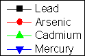
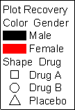
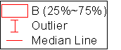
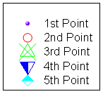
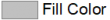
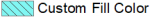

レイヤ内のどのプロットにも関連付いていないシンボル、線+シンボル、および折れ線タイプのプロットシンボルを凡例に追加することができます。詳細は、プロットで使用されていないシンボルの追加を参照してください。
Originのグラフには4つの基本的な凡例があります。
| データプロットの凡例 | カテゴリ値の凡例 | ボックスチャートコンポーネントの凡例 | 1ポイントずつの凡例 |
|---|---|---|---|
 |
 |
 |
 |
次の情報は、さまざまな凡例の背後にある変数の構文を理解し、必要に応じて凡例をオブジェクトのコンテンツを変更するのに役立ちます。
ほとんどの2D・3Dグラフでは、凡例は次の置換構文に従って作成されます。
プロットシンボルのコンポーネント: \L([LayerIndex.]PlotIndex[,PointIndex[,option]])
テキストコンポーネント: %(LayerIndex.PlotIndex[Axis, @option])
これは凡例オブジェクトを右クリックし、プロパティを選択したときに表示されます。:
2つの注意事項:
この表記は特定のデータプロットのシンボルを表示することにより、凡例のデータプロットシンボルを構成することに使用されます。LayerIndexはオプションですが、省略した場合にはアクティブレイヤが想定されます。加えて、オプションのPointIndexは特別なデータポイントに割り当てられたシンボルを表示するのに使用されます。
\L([LayerIndex.]PlotIndex[,PointIndex[,Option]])
ここでは、
| 凡例の項目 | 説明 | 例 |
|---|---|---|
| \l(1) %(1) | もとの線＋シンボルプロット | |
| \l(1, style:s) %(1) | 線＋シンボルプロットのうちシンボルのみを表示 | |
| \l(1, style:l) %(1) | 線＋シンボルプロットのうち線のみを表示 | |
| \l(1, style:sls) | 線＋シンボルプロットをシンボル線シンボルの順で表示 |
| 凡例の項目 | 説明 | 例 |
|---|---|---|
| \l(1) Bar | もとの棒グラフプロット（１つ目のレイヤの１番目のプロット） | |
| \l(1, style:C) Fill Color | 塗りつぶしの色の棒グラフプロットを表示 |  |
| \l(1, 1, 2) Fill Color | ブロックを１つ目のレイヤの１番目棒グラフプロットの塗りつぶしの色にして表示 | |
| \l(1, style:P) Pattern | 棒グラフプロットのパターンを表示 | |
| \l(1, style:P#81F7F3) Custom Fill Color | 指定した色で塗りつぶして凡例を表示 |  |
| \l(1, 1, 1) Border Color | ブロックを１つ目のレイヤの１番目棒グラフプロットの縁の色にして表示 | |
| \l(1, 1, 3) Pattern Color | ブロックを１つ目のレイヤの１番目棒グラフプロットのパターンの色にして表示 |
レイヤ内のどのプロットにも関連付いていないシンボル、線+シンボル、および折れ線タイプのプロットシンボルを凡例に追加することができます。詳細は、プロットで使用されていないシンボルの追加を参照してください。 |
凡例テキストは文字テキストを使って（手動で）作成できますが、より一般的で効率のよい方法で置換表記というものがあります。これはデータプロットに紐づいたメタデータをLabTalk変数を使って表示する方法です。これらのメタデータには「@」オプションを指定することでアクセスでき、グラフの作図の詳細ダイアログボックスの凡例/タイトルタブで指定されたデフォルトの凡例構成を上書きするために使用できます。前述のように、角括弧はオプションの引数を示し、凡例テキストを作成するときには入力しません。
%([LayerIndex.]PlotIndex[Axis[, @option]])
ここでは、
| 凡例の項目 | 説明 |
|---|---|
|
\l(1) %(1) |
2つの行はアクティブレイヤのデータプロットの凡例です。最初の行は1つ目のプロットのもので、次の行は2つ目のプロットのものです。 グラフの作図の詳細ダイアログにある凡例/タイトルタブで指定された一般的なデフォルト設定では、凡例のラベルはソースデータワークシートでコメントを探し、コメントがない場合にはロングネームを使用します。ロングネームもない場合にはショートネームを使用します。 |
|
\l(1.1) %(1.1) |
最初の行は1つ目のレイヤの1番目のプロットの凡例で、次の行は2つ目のレイヤの1番目のプロットの凡例です。 |
|
\l(1) %(1, @LD1) |
凡例のシンボルはアクティブレイヤの最初のプロットのもので、凡例ラベルはソースデータワークシートのY列にある最初のユーザパラメータを使用します。Yはオプションなので2Dでは同一のものを表します。ユーザパラメータの行番号または名前（名前にスペースがある場合には、ダブルクォーテーションで囲みます）でパラメータを参照できます。 |
|
\l(1) %(1X, @L) |
凡例のシンボルはアクティブレイヤの最初のプロットのもので、凡例ラベルはソースデータワークシートのX列のロングネームを使用します。 |
|
\l(2.3, 5) %(2.3X, @LU) Lowest Value |
凡例のシンボルは2つ目のレイヤの3番目のプロットの5番目の点のもので、凡例ラベルはソースデータワークシートのX列の単位を使用し、さらに次のユーザの指定テキストを付け加えます:Lowest Value |
|
\l(1, 3, 2) %(1) |
凡例シンボルはアクティブレイヤの3番目のシンボルで、使用されるプロット要素は内部の色です。 |
Notes:
Originでは、カテゴリデータセット内のそれぞれの「値」はプロットや分析操作をするために1から始まるインデックス値でマッピングされます。このインデックス値はプロット順などを制御するため、 使い方に合わせてカテゴリ値を変更することができます。
標準のデータプロットの凡例と同様に、Originは特別な構文を使用してプロットシンボルとテキストがカテゴリ値凡例に表示される方法を制御します。この特殊な凡例タイプに対応するには、グラフが特定の要件を満たしている必要があります。詳細はプロット要件をご覧ください。
プロットシンボルコンポーネント: \L(PlotIndex[.DataPoint], mCategoryIndex, PlotElement)
テキストコンポーネント: %(PlotIndex, mCategoryIndex, PlotElement)
注意事項:
\L(PlotIndex[.DataPoint], mCategoryIndex, PlotElement) %(PlotIndex, mCategoryIndex, PlotElement)
ここでは、
各プロット要素は、プロット要素と列メタデータから派生したデータセット識別子を組み合わせた凡例の項目を生成します。上記の例では、PlotElement =Symbol Color (縁の色) の場合、識別子は「Gender」です。この識別子は下記のリストから選択した「@option」によって決定されます。「Gender」というテキストを生成する残りの部分はPlotElementのインデックス作成に使用されるブックや列を識別するものであり、変更することを意図したものではありません。
| 凡例の項目 | 説明 |
|---|---|
| Edge Color %(Book, @option, ColumnIndex) \l(1, m1, 1) %(1, m1, 1) \l(1, m2, 1) %(1, m2, 1) \l(1, m3, 1) %(1, m3, 1) |
シンボルの縁の色はカテゴリデータセットによって制御されます。 |
| Color %(Book, @option, ColumnIndex) \l(1,m1,1) %(1,m1,1) \l(1,m2,1) %(1,m2,1) |
シンボルの色はカテゴリデータセットによって制御されます。 |
| Fill Color %(Book, @option, ColumnIndex) \l(1, m1, 2) %(1, m1, 2) \l(1, m2, 2) %(1, m2, 2) \l(1, m3, 2) %(1, m3, 2) |
シンボルの塗りつぶしの色はカテゴリデータセットによって制御されます。 |
| Fill Pattern %(Book, @option, ColumnIndex) \l(1,m1,8 1 2 3) %(1,m1,8) \l(1,m2,8 1 2 3) %(1,m2,8) \l(1,m3,8 1 2 3) %(1,m3,8) |
塗りつぶしのパターンはカテゴリデータセットによって制御されます。 |
| Pattern Color %(Book, @option, ColumnIndex) \l(1,m1,3) %(1,m1,3) \l(1,m2,3) %(1,m2,3) |
パターンの色はカテゴリデータセットによって制御されます。 |
| Shape %(Book, @option, ColumnIndex) \l(1, m1, 4) %(1, m1, 4) \l(1, m2, 4) %(1, m2, 4) \l(1, m3, 4) %(1, m3, 4) |
シンボルの形はカテゴリデータセットによって制御されます。(2Dグラフのみ） |
| Interior %(Book, @option, ColumnIndex) \l(1, m1, 5) %(1, m1, 5) \l(1, m2, 5) %(1, m2, 5) \l(1, m3, 5) %(1, m3, 5) \l(1, m4, 5) %(1, m4, 5) |
シンボルの内部はカテゴリデータセットによって制御されます。(2Dのシンボルのみ) |
| Size %(Book, @option, ColumnIndex) \l(1, m1, 6) %(1, m1, 6) \l(1, m2, 6) %(1, m2, 6) |
シンボルサイズはカテゴリデータセットによって制御されます。 |
ほかの凡例タイプと同様にボックスチャートコンポーネントの凡例もシンボルコンポーネントとテキストコンポーネントで構成されています。ただ、この構文はボックスチャートの凡例で固有のものです。
\L(PlotIndex,ComponentChar)
%(PlotIndex, @V"Box_ComponentChar")
| 文字 | 説明（置換テキスト） | 例 |
|---|---|---|
| B | ボックスそのものこの文字はプロットシンボルコンポーネントにのみ使用されます。 | \L(1,B) ---------- |
| R | ボックスの範囲（例: 25%~75%）この文字はテキストコンポーネントにのみ使用されます。 | ---------- %(1, @V"Box_R") |
| W | ボックスのヒゲ(例 外れ値) | \L(1,W) %(1,@V"Box_W") |
| MDL | ボックスの中央値線(中央値線) | \L(1,MDL) %(1,@V"Box_MDL") |
| ML | ボックスの平均線(平均線) | \L(1,ML) %(1,@V"Box_ML") |
| Max | ボックスの最大のパーセンタイルポイント(最大) | \L(1,Max) %(1,@V"Box_Max") |
| P99 | ボックスの99%パーセンタイルポイント(99%) | \L(1,P99) %(1,@V"Box_P99") |
| M | ボックスのの平均パーセンタイルポイント(平均) | \L(1,M) %(1,@V"Box_M") |
| P1 | ボックスの1%パーセンタイルポイント(1%) | \L(1,P1) %(1,@V"Box_P1") |
| Min | ボックスの最小パーセンタイルポイント(最小) | \L(1,Min) %(1,@V"Box_Min") |
| D | ボックスのデータポイント(データ) | \L(1,D) %(1,@V"Box_D") |
| O | ボックスの外れ値(外れ値) | \L(1,O) %(1,@V"Box_O") |
1ポイントずつの凡例はプロットされたデータポイントすべての凡例項目を作成します。
この特殊な凡例タイプに対応するには、グラフが特定の要件を満たしている必要があります。詳細はプロット要件をご覧ください。1ポイントずつの凡例はトリリニアダイアグラムではデフォルトの凡例タイプになっています。
ほかの凡例と同様に、1ポイントずつの凡例の構文にはプロットシンボルコンポーネントとテキストコンポーネントがあります。
\L([LayerIndex.]PlotIndex[,PointIndex]) %([LayerIndex.]PlotIndex[, @option])
1ポイントずつの凡例で通常使用される「@option」はワークシートのセルへのアクセス用で、具体的には@Vと@WTのオプションを使用します。ワークシートセルへのアクセスをご覧ください。
凡例テキストは ワークシート列に保存されているデータセットのメタデータを組み込んだ%( ) substitution notation によって作成されます。デフォルトでは、グラフテンプレートはワークシートテンプレートとともに保存される 凡例の自動設定を使用します。下記のリストの「@options」を使用してデフォルトの構成を上書きできます。
@options変数の使用については上記の個々の凡例タイプの説明を参照してください。
例としてほとんどの2Dと3Dグラフで共通のデータプロットの凡例 を使用します。
%([LayerIndex.]PlotIndex[Axis] [,@option])
以下はグラフの凡例テキストをカスタマイズするためによく使用される @optionsです。すべての@オプションの詳細については、@オプションのリストを参照してください。
Notes:これらの"@"ラベル オプションの多くはワークブック データにのみ適用できますが、一部は行列データにも適用できます。次に例を示します。
%(1,@W) // 行列ブックのショートネームを返す |
次の表の例は上図を参照しています:
| @option | 置換テキストの参照先 | 例 |
|---|---|---|
| @D | データセット名 | %(1,@D) --> Book1_B |
| @GF | グラフのフィルタ条件。
ページタイトルに%(Lをサポートしています。例えば、%(L[n],@GF)でLは現在のレイヤ、L2はレイヤ2です。 |
%(1,@GF) --> > 1996 |
| @GFN | 列名を持つグラフのフィルタ条件。 | %(1,@GFN) --> Year > 1996 |
| @LA | 利用可能ならロングネーム、そうでなければショートネーム | %(1,@LA) --> Delta Temperature |
| @LC | 利用可能ならコメント、そうでなければロングネーム、それもできなければショートネームを参照 | %(1,@LC) --> S15-125-03 (filename) |
| @LDn | ユーザ定義パラメータのn番目@LD は @LD1 と同じものを指す (2025)n = 0は最後のユーザ定義パラメータです。 | %(1,@LD2) -->YCBO milled |
| @LG | ロングネーム（使用できなければショートネーム）と単位（あれば）@Uと同等 | %(1,@LG) -->Delta Temperature (K) |
| @LHn | n番目のユーザ定義パラメータ行の名前@LH1 は @LH と同じ (2025)n = 0は最後のユーザ定義パラメータです。 | %(1,@LH3) -->Time |
| @LL | 列のロングネームロングネームがない場合には欠損値を返します | %(1,@LL) --> Delta Temperature |
| @LM | 利用可能ならコメントの1行目を、できなければロングネームを、それもできなければショートネームを参照 | %(1,@LM) --> S15-125-03 |
| @LN | コメントの1行目（利用できなければロングネームを、それもできなければショートネーム）を参照@(@LM(@LU)).と同じ | %(1,@LN) --> S15-125-03(K) |
| @LPn | n番目のシステムパラメータ。@LP と @LP1 は同じ | %(1,@LP2) --> 12/01/2004 |
| @LS | 列のショートネーム、@Cと同等 | %(1,@LS) --> B |
| @LU | 単位 | %(1,@LU) --> (K) |
| @LUP,@LUS,@LUA,@LUC | 単位に括弧を追加。Pは括弧 = (), Sは角括弧 = [], Aは山括弧 = <>, Cは波括弧 = {} | %(1,@LUA) --> <km> |
| @W | ワークブックのショートネーム
Note: @W, UserVar$を使用してユーザ変数にアクセスできます。詳細は後述のインポートしたファイルの情報アクセスセクションを参照してください。 |
%(1,@W) -->Book1 |
| @WCn | ワークブックコメントのn番目の行。nの指定がない場合には最初の行のみが表示されます。 | %(1,@WC2) -->
<Origin EXE Folder>\Samples\Curve Fitting |
| @WL | ワークブックのロングネーム | %(1,@WL) -->S15-125-03.dat |
| @WMn | ワークシートコメントのn番目の行。nの指定がない場合には最初の行のみが表示されます。 | %(1,@WM) -->Data imported from |
| @WN | セルノートの内容。 | %(1,@WN,1) -->1番目のプロットのソース列、行[1]のノートの内容。 |
| @WS | ワークシートの名前 | %(1,@WS) -->Trial Run 1 |
|
Note: 単位が凡例に表示されている場合、英語と日本語版のOriginでは単位を括弧()で囲みますが、ドイツ語版では角括弧[]を使用します。 |
ワークシートセルの内容を返すための特別な@optionsがいくつかあります。@V と @WTオプションは主に1ポイントずつの凡例で使用されます。
| @option | 置換テキストの参照先 | 例 |
|---|---|---|
| @L, n | データプロット内にあるn番目のポイントのX値 |
|
| @V, n | データプロット内にあるn番目のポイントのY値 |
|
| @WT, ColIndex/ColName, RowIndex | 列番号（もしくはショートネームや行番号）で指定されたワークシートセルの値 |
|
| @WT, ColIndex/ColName, ColLabelRowCharacter | 列番号（もしくはショートネーム）と列ラベルの行の文字で指定されたワークシートセルの値 |
|
前述の通り、凡例の内容はプロットシンボルコンポーネントとテキストコンポーネントで構成されています。通常、凡例プロットシンボルはグラフウィンドウのデータプロットの1つで使用されます。ただし、グラフ内のどのプロットでも使用されていない凡例プロットシンボルを追加したい場合もあるでしょう。それがこのセクションの主題です。
Origin 2018以降では、凡例オブジェクトのテキストタブ（プロパティ > テキストタブ > 凡例シンボル追加ボタン）を使用して、シンボル（散布図）、線+シンボル、および折れ線グラフで使用されるプロットシンボルを手動で追加できます。
以前は複雑な構文を使用してシンボルを手動で作成する必要がありましたが、これにより、ユーザーインターフェイスダイアログボックスを使用してプロットシンボルを簡単に作成できるようになりました。これを使う場合、シンボルの作成に使用される構文が同時に生成されます。したがって、このユーザーインターフェイスによって、カスタムシンボルを生成するための文字列を簡単に取得できます。
サンプル：
プロパティはコンマ区切りのリストで組み合わせることができます。
\L(O Shape:Star, Interior:Open, Style:s, Fill:3, EdgeColor:4, Size:15.0, EdgeWidth:20.0) \L(O LineStyle:Dash, ArrowShape:Stealth, BeginArrowShape:Diamond, Style:L, LineColor:2, ArrowWidth:7.0, ArrowLength:10.0, BeginArrowWidth:8.0, BeginArrowLength:12.0) \L(O Shape:Circle, Interior:Open, LineStyle:Solid, Fill:2, EdgeColor:5, Size:14, EdgeWidth:15.0, LineColor:5, Gap:60)
| プロパティ | オプション | 例 |
|---|---|---|
| Style | Style:<keyword>は折れ線およびシンボルシーケンスを設定します（s=シンボル, l=線のセグメント）。任意の順序で表示できます。 | Style:sls |
| Gap | Gap:## はポイントサイズでシンボルとの間隔を設定し、 Gap:p## はデフォルトのパーセントで間隔を設定します（100%を超える値も設定可）。 | Gap:24 Gap:p200 |
| Size | Size:##は散布図シンボルのポイントサイズを設定し、Size:p##は（プロット）シンボルサイズのパーセントを設定します（100%を超える値も設定可）。 | Size:18 Size:p200 |
| Shape | Shape:<keyword>はシンボルの形状を設定します。次のものが利用できます。Square, Circle, UpTri, DownTri, Diamond, Plus, Times, Asterisk, HorizontalBar, VerticalBar, Arrow, LeftTri, RightTri, Hexagon, Star, Pentagon, Sphere. | Shape:Star |
| Interior | Interior:<keyword>シンボル内部を設定します。次のものが利用できます。Solid, Open, Dot, Hollow, Cross, XLines, HLine, VLine, HalfUp, HalfRight, HalfDown, HalfLeft | Interior:Open |
| Fill | Fill:<index>またはFill:<htmlColor> はシンボル内部の色を設定します。LabTalkカラーインデックスまたはHTMLのカラーコードで指定できます。 | Fill:18 Fill:#FFFFFF |
| EdgeColor | EdgeColor:<index> or EdgeColor:<htmlColor>はsolidシンボルの内部の色を設定します。LabTalkカラーインデックスまたはHTMLのカラーコードで指定できます。 | EdgeColor:1 EdgeColor:#000000 |
| EdgeWidth | EdgeWidth:## はポイントサイズでシンボルの縁の太さを設定し、EdgeWidth:p##はプロットシンボルの縁幅のパーセントで太さを指定します（100%を超える値も設定可）。 | EdgeWidth:15.0 EdgeWidth:p100 |
| LineStyle | LineStyle:<keyword>線のスタイルを設定します。次のものが利用できます。Solid, Dash, Dot, DashDot, DashDotDot, ShortDash, ShortDot, ShortDashDot | LineStyle:Solid |
| LineColor | LineColor:<index>またはLineColor:<htmlColor>は線の色を設定します。LabTalkカラーインデックスまたはHTMLのカラーコードで指定できます。 | LineColor:1 LineColor:#000000 |
| LineWidth | LineWidth:##はポイントサイズで線の幅を設定し、LineWidth:p##はプロット線サイズのパーセントで線の幅を表示します（100%を超える値も設定可）。 | LineWidth:1.5 LineWidth:p100 |
| Length | Length:##はポイントサイズで線分の長さを設定します。 Length:p##は アクティブデータセットの標識の幅のパーセントで設定します（100%を超える値も設定可）。 | Length:100 Length:p200 |
| BeginArrowShape | BeginArrowShape:<keyword>は矢印の始端 (左側) の形状を設定します。次のものが利用できます。Filled, Empty, Stealth, FilledReverse, EmptyReverse, StealthReverse, Stick, Cross, Diamond, Rectangle, Ellipse, StickUp, StickDown | BeginArrowShape:Diamond |
| BeginArrowWidth | BeginArrowWidth:##は、矢印の始端 (左側) の矢印幅をポイントサイズで設定します。 | BeginArrowWidth:8.0 |
| BeginArrowLength | BeginArrowLength:##は、矢印の始端 (左側) の矢印の先端の長さをポイントサイズで設定します。 | BeginArrowLength:12.0 |
| ArrowShape | ArrowShape:<keyword>は矢印の終端(右側)の形状を設定します。次のものが利用できます。Filled, Empty, Stealth, FilledReverse, EmptyReverse, StealthReverse, Stick, Cross, Diamond, Rectangle, Ellipse, StickUp, StickDown | ArrowShape:Diamond |
| ArrowWidth | ArrowWidth:##矢印の終端(右側)の矢印の幅をポイントサイズで設定します。 | ArrowWidth:8.0 |
| ArrowLength | ArrowLength:##矢印の終端(右側)の矢印の長さをポイントサイズで設定します。 | ArrowLength:12.0 |
次の表は、ブロックスタイルのプロットシンボルの作成に使用する構文を説明しています。
線、線+シンボル、および線スタイルのプロットシンボルに使用される構文とは、いくつかの点で大きな違いがあります。
サンプル：
プロパティはスペース区切りのリストで組み合わせることができます。
\L(1, PatternScale:p200 PatternFill:2 BorderStyle:Dash BorderColor:4 BorderThick:2 Width:40 Height:40)
| プロパティ | オプション | 例 |
|---|---|---|
| Pattern | Pattern:## はインデックス番号でパターンを設定します。1から始まります。 | Pattern:5 |
| PatternColor | PatternColor:##またはPatternColor:<htmlColor>はパターンの色を設定します。LabTalkカラーインデックスまたはHTMLのカラーコードで指定できます。 | PatternColor:6 PatternColor:#FF00FF |
| PatternFill | PatternFill:##またはPatternFill:<htmlColor>はブロック内部の色を設定します。LabTalkカラーインデックスまたはHTMLのカラーコードで指定できます。 | PatternFill:5 PatternFill:#81F7F3 |
| BorderStyle | BorderStyle<keyword> は境界線のスタイルを設定します。次のものが利用できます。 Solid, Dash, Dot, DashDot, DashDotDot, ShortDash, ShortDot, ShortDashDot | BorderStyle:Dash |
| BorderColor | BorderColor:##またはBorderColor:<htmlColor>はブロック内部の色を設定します。LabTalkカラーインデックスまたはHTMLのカラーコードで指定できます。 | BorderColor:16 BorderColor:#8000FF |
| BorderThick | BorderThick:## デフォルトの太さの倍数で縁の太さを設定します。 | BorderThick:2 |
| PatternWidthまたはWidth | PatternWidth:p##またはWidth:p## はアクティブデータセットの標識のパーセントでブロック幅を設定します（最大幅 = 100%）。 | PatternWidth:40 |
| PatternHeightまたはHeight | Height:p## アクティブデータセットの標識のパーセントでブロックの高さを指定します。 (最大値 = 100%) | PatternHeight:20 |
ある程度の忍耐が必要ですが、プロットされたデータとは関係のない凡例シンボルを作成できます。
次の4種類の構文は、使用するシンボルの種類に応じて、さまざまな場面で使用できます。
| \L(O SymEdgeColor,Sym,Fill,Size,ColorLn,LineStyle,Gap,LnWidth,SymFillColor,EdgeThickness) |
| \L(S 0, Sym, Fill, SymEdgeColor, SymFillColor, Size, LineStyle, ColorLn, LnWidth, Gap, EdgeThickness) |
| \L(S 1, SymIndex, SymEdgeColor, Size, , , LineStyle,ColorLn, LnWidth, Gap) |
| \L(S 1,CharIndex,CharColor,Size,Font,FontStyle,LineStyle,ColorLn, LnWidth, Gap) |
Note: \L(S )構文を使用する場合、最初の変数を0として定義した場合には、Originの組み込みのシンボルを使用することを意味し、1と定義した場合には、ユーザ定義シンボルもしくはASCII文字を使用することを意味します。
それぞれの変数の定義は下記のリストのようになっています:
| 引数 | 説明 |
|---|---|
| SymEdgeColor | Originのカラーインデックス: 1...24(1=黒,2=赤,...)もしくはユーザ定義カラーがあれば24...40から HTMLのカラーコード: #ff0000 など（the color() 関数を使用する場合はダブルクォーテーションで囲む必要はありません。）から |
| Sym | Originの形状番号を使ってシンボルを指定します。（0 = シンボルなし、1 = 正方形、2 = 丸、3 = 三角、4 = 逆三角、5 = 菱形、6 = 十字(+)、7 = エックス(×)、8 = アスタリスク(*)、9 = 横棒(-)、10 = 縦棒(|)、11 = 数字(1234...)、12 = 大文字(ABCD...)、13 = 小文字(abcd...)、14 = 右矢印(→)、15 = 左三角、16 = 右三角、17 = 六角形、18 = 星、19 = 五角形、20 = 球） |
| Fill | シンボル内側を指定するOriginの番号から選んで塗りつぶします。（0=単色、1=空白、2=中央に点、3=枠のみ、4=＋中央、5=×中央、6=－中央、7=｜中央、8=上半分塗り、9=右半分塗り、10=下半分塗り、11=左半分塗り) |
| Size | ポイントのシンボルサイズ |
| ColorLn | Originのカラー番号かHTMLのカラーコードで指定します（SymEdgeColor をご覧ください） |
| LineStyle | Originの線種から線種を指定します。（0=実線, 1=破線, 2=点線, 3=1点鎖線, 4=2点鎖線, 5=短い破線, 6=短い点線, 7=短い1点鎖線） |
| Gap | シンボルサイズのパーセントでシンボルと線分の間隔を設定します。 |
| LnWidth | ポイントの線分の太さを指定します。 |
| SymFillColor | Originのカラー番号かHTMLのカラーコードで指定します（SymEdgeColor をご覧ください） |
| EdgeThickness | 0から100までのパーセントでシンボルの枠の太さを指定します。 |
| SymIndex | ユーザ定義シンボルにあるユーザ定義のシンボルの順序を指定します。1から31の整数で入力できます。 |
| CharIndex | 文字のASCIIコードを指定します。32から255の整数で入力できます。 |
| CharColor | ASCII文字の色番号を指定します。(SymEdgeColor をご覧ください) |
| Font | フォントリストから特定のフォントのインデックス番号を指定します。インデックス番号を取得したい場合には、スクリプトウィンドウ もしくは コマンドウィンドウで font(fontname)= を実行してください。 |
| Font Style | フォントスタイルのインデックス番号を指定します。（下線、イタリック、太字）0=スタイルなし, 1= 下線のみ, 2=イタリックのみ, 3=下線＋イタリック, 4=太字のみ, 5=下線＋太字, 6=イタリック＋太字, 7=下線＋イタリック＋太字 |
1つの変数を空のままにすると、この変数にはデフォルト値が使用されます。構文 \L(O SymEdgeColor,Sym,Fill,) は Fill のあとのすべての変数にデフォルトの値を使用します。 これらのワークシートセルへのアクセス表記を使ってワークシートセルの値を使用した1つの変数を定義することもできます。 |
線の凡例シンボルを作成する場合、より簡単な構文があります。
\L(L Color, Thickness, Style)
| 引数 | 説明 |
|---|---|
| Color | Originのカラーインデックス: 1...24(1=黒,2=赤,...)もしくはユーザ定義カラーがあれば24...40から線の色を指定します。 |
| Thickness | ポイントの線分の太さを指定します。 |
| Style | Originの線種から線種を指定します。（0=実線, 1=破線, 2=点線, 3=1点鎖線, 4=2点鎖線, 5=短い破線, 6=短い点線, 7=短い1点鎖線） |
エスケープシーケンスを使ってテキストフォーマットをカスタマイズできます。よく使用されるいくつかの例を以下に示します:
| 使用構文 | フォーマットテキスト | 例 |
|---|---|---|
| \+(text) | 上付き文字 | %(1)\+(2) |
| \-(text) | 下付き文字 | %(1)\-(n) |
| \g(text) | ギリシャ文字 | \g(m) |
| \b(text) | 太字 | \b(Important) |
| \i(text) | イタリック | \i(%(1)) |
| \u(text) | 下線 | \u(%(1X,@L)) |
| \sc | 複数の連続スペースの場合でも、1つの水平スペース | \b(%(1Y,@LL)\sc%(1Y,@LD3)\sc%(1Y,@LD4)\sc(%(1Y,@LU))) |
| Note: 以下の情報によって凡例要素をより柔軟に配置できる場合があります。凡例テキストを右揃えにすることに関心がある場合は、 このFAQを参照してください。 |
凡例シンボルとテキストの配置プロパティを指定するには、グラフをアクティブにして、スクリプトウィンドウで以下のスクリプトを実行する必要があります。
legend.align=1; //配置モードをオンに
次に、凡例を右クリックして プロパティを選択してダイアログを開き、セルアンカーとして\^()を追加します。これによりアンカー右側にあるオブジェクトの配置が設定されます。\^(l), \^(c), \^(r)はそれぞれ左、中央、右に配置する設定です。次に例を示します:
OKをクリックすると、ダイアログのプレビューにあったものと同じ凡例が表示されます。
または、Ctrlキーを押しながらドラッグして、凡例を再配置することもできます:
| Note: Origin2020b以降には、テキストを簡単に整列できるようにテキストオブジェクト-凡例ダイアログのテキストタブにテキストを整列するドロップダウンリストがあります。 |
たとえば、Ctrl +ドラッグを使用すると、現在の凡例行の右側に凡例オブジェクトを作成できます。この場合、シンボルとテキストの間に\^(l), \^(c), \^(r)の代わりに \^(lu), \^(cc), \^(ru)を使用する必要があります。
このように、プロットと特別なポイントの凡例アイテムは、以下に示すように、Ctrlキーを押しながらドラッグして再配置すると1つのグループとして扱われます:
それ以外の場合、Ctrlキーを押しながらドラッグして再配置すると、シンボルと対応するテキストが分離されます。